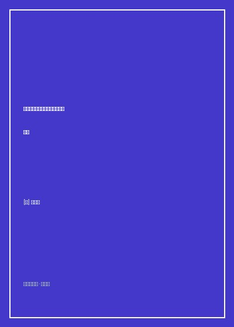

《康熙：重构一位中国皇帝的内心世界》

总体观点
《康熙：重构一位中国皇帝的内心世界》（Emperor of China: Self-Portrait of K'ang-Hsi）是西方汉学与文学史学结合的划时代奇观。传统官方编纂的《清实录》与起居注，将清圣祖康熙塑造成一个毫无瑕疵、不苟言笑、神圣庄严的道德明君雕像；而史景迁从浩瀚的满汉朱批奏折、绝密上谕、私人书信与宫廷日记中打捞出真实的碎片，破天荒采用‘第一人称（‘朕’）’叙事，彻底剥去皇帝的神圣油彩，复活了一个有血有肉、有体温、有偏头痛、深陷皇位孤独与人性疑惧的真实历史巨人。
全书通过‘游猎、治理、思索、生、寿、谕’六大人生维度，立体展现了这位异族君王在经略庞大农耕帝国的智力与体力巅峰。康熙不仅是平定三藩、收复台湾、亲征噶尔丹的军事统帅，更是对西方天文学、几何学、解剖学抱有狂热好奇心的科学赞助人。他每天黎明起床亲批数十件朱批，在木兰围场弯弓射虎维持八旗满洲勇武，在乾清宫与耶稣会传教士南怀仁研讨火炮铸造与浑天仪日食测算，展现出东方专制君主中罕见的精力过人与心智敏锐。
帝王无上权力的顶峰，亦是人伦悲剧与彻骨孤独的深渊。康熙晚年最深重的伤痛莫过于‘九子夺嫡’与废太子胤礽之痛。身为天下至尊，他可以诛杀鳌拜、裁撤藩王、征服草原，却无法阻挡亲生儿子为了皇位对他日夜防范甚至密谋弑君篡位。在‘庭训格言’的苍凉晚景中，这位统治了六十一年的老人躺在畅春园病榻上，回首一生功业与家庭碎裂，发出了‘心力耗竭、鞠躬尽瘁’的历史浩叹，揭示了皇权异化对亲情伦理的彻底毁灭。
核心观点
-
1. 木兰秋狝：在马背与弓箭上维系满洲军魂
康熙深知满洲八旗入关后极易被汉地的繁华奢靡消磨尚武之气。每年秋天率领王公贵族开赴塞外长城外的木兰围场举行围猎，不仅是一场声势浩大的实弹军事演习与对蒙古王公的恩威宣示，更是康熙回归白山黑水满洲野性体魄的心灵洗礼。
康熙在朱批中得意洋洋记录自己的毕生围猎战果：亲手射杀过135只猛虎、20只熊、25只豹子与上千头狍子麋鹿，展现出与汉族深宫羸弱皇帝截然不同的彪悍生命力。 -
2. 对西方自然科学的狂热与实用主义防备
康熙对西方科学的痴迷冠绝历代帝王：跟从南怀仁、白晋学习欧几里得几何学、摆钟微积分与人体解剖学，并亲自服用金鸡纳霜（奎宁）治愈疟疾。但他始终将科学严格局限在皇家禁宫的私人把玩与钦天监历法工具，从不向民间士大夫普及，保持着满洲统治者的极度戒备。
康熙当着满汉大学士的面亲自用算盘与西洋象限仪演算日食出现时刻，分秒不差，以西方精密天文学权威在朝堂上彻底震慑并驯服了保守的汉族理学老臣。 -
3. 密折制度：君王在卧榻之侧的无眠眼线
为了打破传统内阁官僚集团的欺瞒垄断，康熙创立了‘密折制度’。他直接赋予李煦、曹寅（曹雪芹祖父）等内务府心腹包衣奴才直达御前的特权，秘密密报江南米价、官场贪腐、雨水灾情乃至民间谣言，将庞大帝国的神经末梢直接连接到乾清宫的御案前。
曹寅在苏州织造任上每隔数日便上密封折子汇报两江总督动向与江南士子言论，康熙朱批‘知道了’、‘此事不可声张，尔等密密体访再奏’，展现精细入微的帝王耳目控盘术。 -
4. 九子夺嫡与废太子的噬心之痛
康熙对嫡长子胤礽倾注了三十年的全部父爱与帝王教育心血，亲自教其骑射儒经。然而储君在成年后由于权力渴望变得专横跋扈、甚至在行宫账外夜间窥探皇帝寝帐，迫使康熙两次痛下决心废黜太子，引发诸皇子为夺储君结党营私拔刀相向，彻底粉碎了天伦之乐。
还原康熙在行宫宣布废黜太子大典上的惨烈场景：老皇帝在文武百官面前当场痛哭失声至昏厥倒地，满头白发颤抖，指责太子‘暴戾淫乱、欲弑父夺权’，父爱与皇权在这一刻双双粉碎。 -
5. 最后的遗诏：耗尽心血的苍凉晚景
统治中国六十一年后，在生命的最后关头，康熙没有留下汉武帝或唐太宗般的宏大炫耀，而是一篇浸透心酸疲惫的《遗诏》。他坦言‘帝王之苦，世人不知；诸葛亮尚能五丈原病逝，而朕至老无一日敢懈怠’，展现了一位千古一帝在生命终点面对历史审判时的苍凉与坦荡。
史景迁精选康熙遗诏中的千古沉痛独白：‘朕自即位以来，兢兢业业，一日二日万几，十有余年未曾安枕。身负天下之重，何其苦也！’为这位复杂皇帝的人生悲剧写下终极注脚。
全书结构
-
第一章 游猎：满洲骑射与塞外野性
以木兰围场、长城关外秋狝与亲征漠北噶尔丹为线索，展现康熙作为草原统帅与马背英雄的勇武体魄、生存意志与游牧性格遗产。
详细记录康熙在塞外零下三十度严寒中与蒙古诸王同住毡帐、生食烤鹿肉、手拉强弓百步穿杨的豪迈军旅起居实录。 -
第二章 治理：朱批密折与官僚机器驯服
深入紫禁城深宫内政，解析密折制度运作、整饬黄河水患、平定三藩之乱，以及如何运用恩威并施手段拉拢并防范汉族士大夫官僚。
以治理黄河名臣靳辅与陈潢的治河奏折为例，展示康熙数次亲临黄河视察大坝、手持测量仪器亲自校核水深的精明君主实务风格。 -
第三章 思索：科学好奇与中西文化碰撞
展现康熙与耶稣会士（南怀仁、张诚、白晋）的日常交往，解析其对西洋日晷、望远镜、药理学的好奇心与面对罗马教廷‘中国礼仪之争’时的坚决主权捍卫。
记录教皇特使多罗来华强令中国教徒不得尊孔祭祖，康熙震怒下旨批复‘西洋人等小人，如何言得中国之大理，以后不必向其传教’的决绝断交时刻。 -
第四章 生：皇权血缘与父子骨肉相残
全书情感戏剧高潮，聚焦深宫后妃与皇子教育，详述两立两废皇太子胤礽的心路历程，记录诸皇子在储位争夺中的血腥暗算与父子恩断义绝。
细腻描写康熙在深夜将十四阿哥胤禵打翻在地、甚至拔出佩剑欲斩皇子，被诸大臣拼死抱住大腿的深宫父子反目惨绝人寰场景。 -
第五章 寿与谕：畅春园的落幕与永恒孤独
总结全书，描绘康熙晚年受偏头痛、手足麻木折磨依然抱病批阅奏折的疲惫，精读《康熙遗诏》，为一代大帝重构出真实而悲悯的灵魂全貌。
畅春园内风吹寒树，六十九岁的老皇帝在油灯下缓缓放下朱砂御笔，凝视窗外无边黑夜，史景迁以诗意文字为全书收官，余韵悠长。